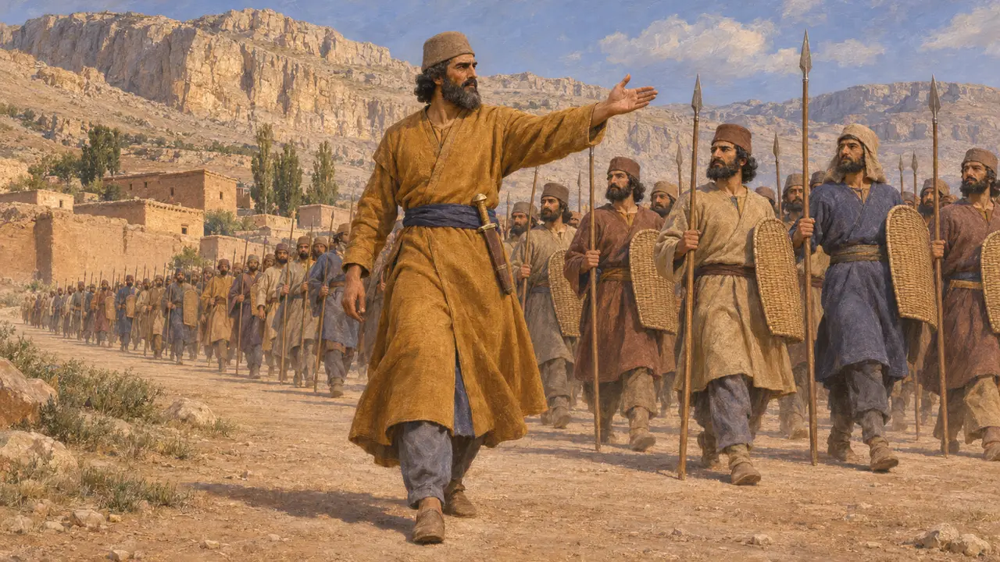
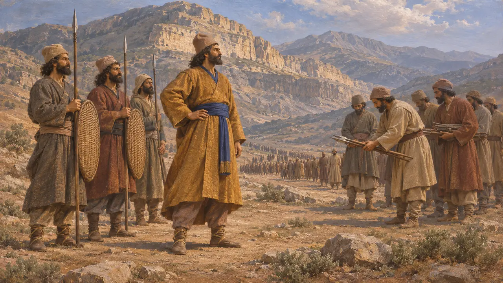
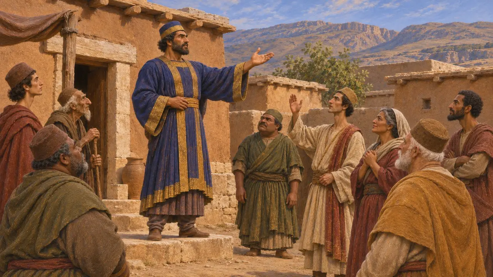
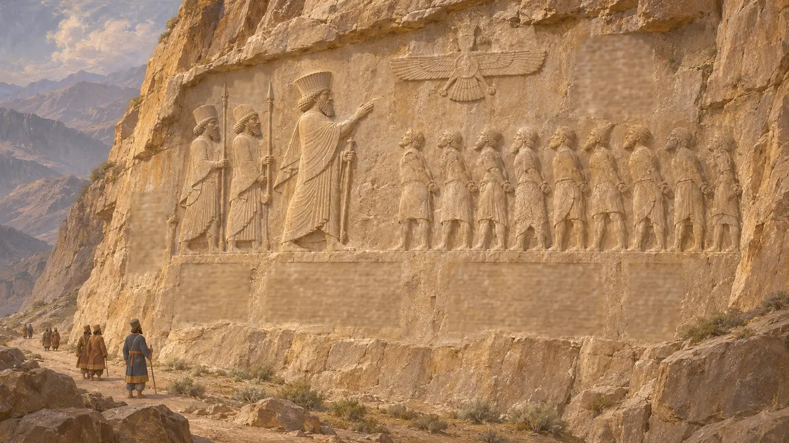
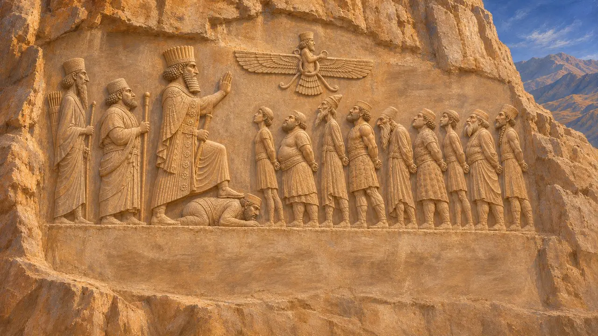

Artavardiya
Général perse de Darius contre Vahyazdata en Perside, 522-521 av. J.-C.
Dans le jeu : Niveau 4 : La Terrasse
Artavardiya était un chef perse que Darius envoya contre le rebelle Vahyazdata en Perside. Il est connu par l'inscription de Behistun, où Darius le nomme comme l'homme dont l'armée battit les rebelles en deux batailles. Hérodote ne le mentionne pas, et aucun autre récit grec conservé de ces années ne le nomme.
Dans le jeu : Le jeu ne nomme Artavardiya que dans les entrées de la Chronique et dans l'article de l'Encyclopédie consacré à la révolte de Vahyazdata. Il n'est ni un personnage ni un lieu dans aucun niveau et n'a pas de mécanique propre.

Général de Darius à Behistun
Dans les sourcesDans l'inscription de Behistun, Darius qualifie Artavardiya de Perse et de serviteur, et dit l'avoir envoyé avec une armée perse contre Vahyazdata. Le texte ne lui donne aucun titre et ne dit rien de sa famille. L'inscription est la seule source contemporaine qui le nomme.
DB

Rakha et le Mont Parga
Dans les sourcesDarius relate deux batailles au cours desquelles l'armée d'Artavardiya vainquit les forces de Vahyazdata, la première en un lieu appelé Rakha et la seconde au mont Parga. Vahyazdata fut ensuite capturé avec ses principaux partisans et empalé à Uvadaicaya, en Perside. Darius attribue ces victoires à Ahuramazda et ne décrit pas les combats.
DB

Le rebelle qu'il combattit
Dans les sourcesVahyazdata était un Perse qui prétendait être Bardiya, le fils de Cyrus, bien que Darius affirme que Bardiya avait été tué auparavant. Darius le présente comme un menteur qui trompa le peuple de Perside. Darius dit avoir envoyé Artavardiya contre lui, et le texte ne laisse nullement entendre que Darius s'y soit rendu en personne.
DB

Le silence des auteurs grecs
Récit antiqueHérodote raconte longuement l'histoire du faux Smerdis et de la prise du trône par Darius, mais il ne mentionne pas un second prétendant en Perside, et ne dit donc rien d'Artavardiya. Sa version de ces années est façonnée par les récits sur les sept conjurés. Pour cette campagne, Behistun est donc la source principale.
Herodotus 3.61-88

Dans quelle mesure on peut se fier à Darius
ContestéBehistun est le récit de Darius lui-même, rédigé pour justifier son pouvoir, et il présente chaque rebelle comme un menteur qui s'est opposé au roi. Les historiens admettent que les révoltes ont bien eu lieu, mais ils abordent avec prudence les détails des batailles et des dates. Une révolte en Perside même aurait été dangereuse pour Darius, mais il s'agit là d'un jugement moderne, et le rôle d'Artavardiya, au-delà de ce que dit Darius, ne peut être vérifié.
P. Briant, From Cyrus to Alexander, 2002
Sources
- DB
- Herodotus 3.61-88
- P. Briant, From Cyrus to Alexander, 2002
- A. Kuhrt, The Persian Empire, 2007